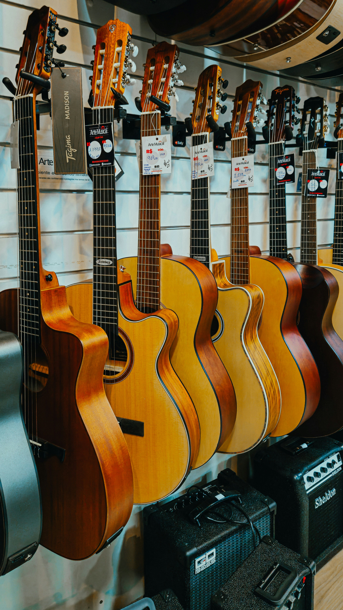
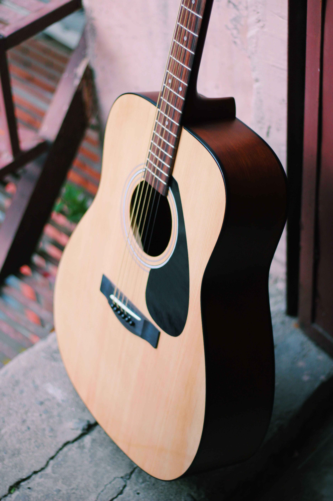
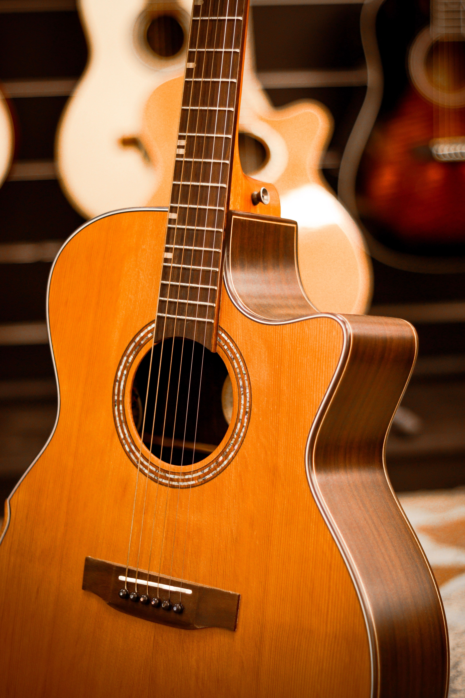
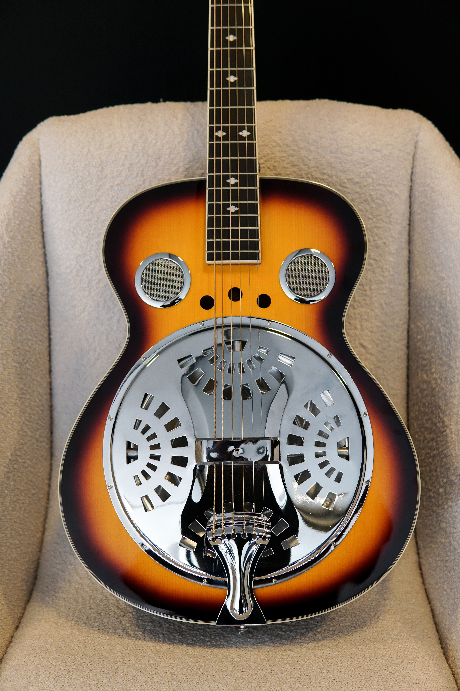

Explore the acoustic guitar collection at Suki's Guitar Shop, featuring a variety of styles designed for every musician. From rich, powerful strumming sounds to soft and delicate fingerstyle melodies, our guitars offer beautiful natural tones and excellent playability. Whether you're a beginner learning your first chords or an experienced guitarist looking for a new sound, we have the perfect acoustic guitar to inspire your musical journey.
At Suki's Guitar Shop, we believe an acoustic guitar is more than just an instrument; it is a way to express creativity and emotion. With no amplifiers required, you can enjoy music almost anywhere. From relaxing melodies around a campfire to professional studio performances, our acoustic guitars deliver inspiring sounds and timeless musical experiences for every player.

The Dreadnought is known for its large body and powerful, full-bodied sound. Its strong bass and loud projection make it perfect for chord strumming, country music, folk, and acoustic performances.

Designed with a cutaway body for easier access to higher frets, this guitar is ideal for fingerstyle playing and complex melodies. Its comfortable design and balanced tone make it a versatile choice for many musicians.

The Resonator Guitar features a unique metal resonator that produces a bright, metallic, and powerful sound. Popular in blues, country, and bluegrass music, it is perfect for musicians looking for a distinctive and traditional tone.